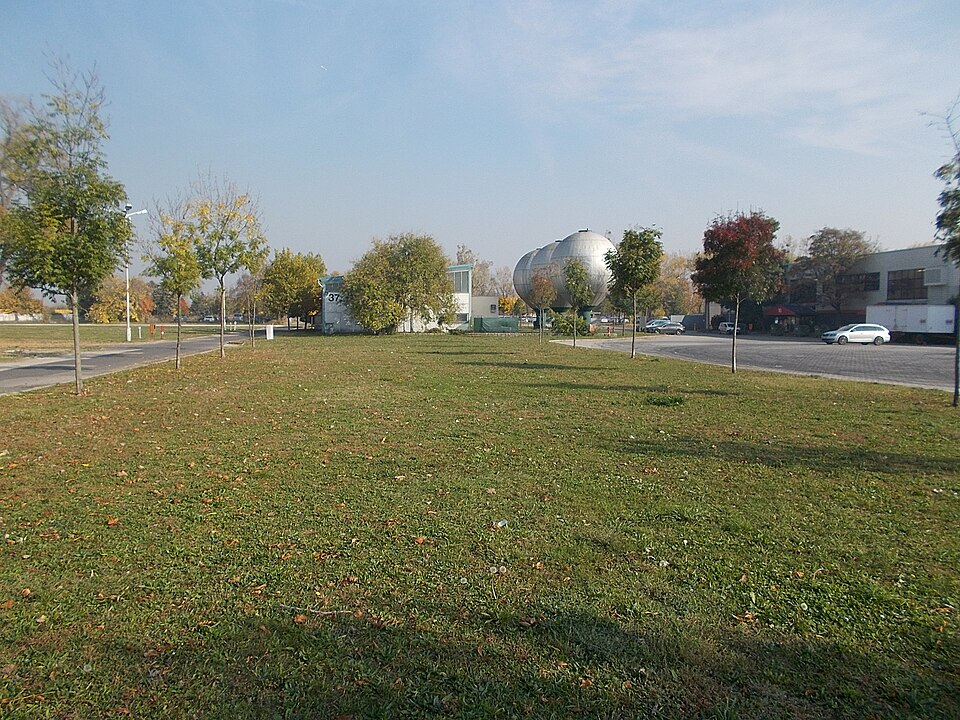
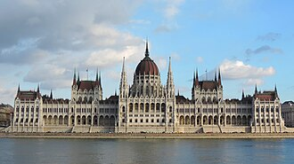
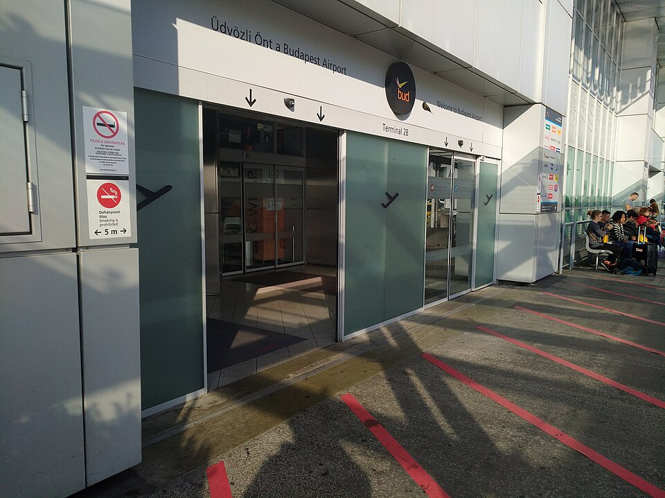
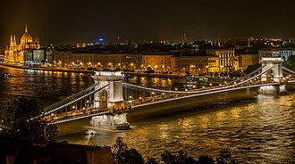
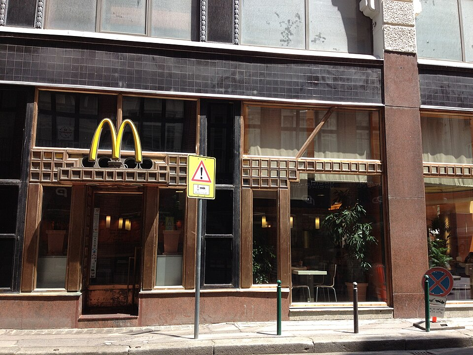

10/25（周日）落地布达佩斯 → 报时 → 朋友会场 → 17:30 出发 → 吃饭 → 19:40 夜游
⚠ 排得下（有风险点） 作息：早起（赶 ARN 08:15 的航班）；游船结束后可以回住处，也可以另安排活动，不含攀岩（D-122）
- ✅排得下：17:30 从会场出发，先去吃饭，约 17:57 到麦当劳，19:20 前到码头，19:40 开船
- ⚠「报时」没有改写成报到或入住（K-14 / Q-18）。这天不去议会大厦参观。已付的是 19:40 还是 20:20 仍对不上（K-10 / Q-09），计划按用户定的 19:40 写
今天去哪
机场 → 先去「报时」（选离会场近的地方；转写未改写）→ 朋友会场 → 17:30 从朋友会场出发 → 17:30–19:40 路上和吃饭（麦当劳 Régi posta u. 10）→ 19:40 夜游 → 靠岸后回住处或另安排（不含攀岩）
必须卡的时间点
| 时间 | 要做的事 |
|---|---|
| 08:15 | W6 1732 ARN 起飞（到 GDN 09:35，转 FR4412 11:55） |
| 13:35 | FR4412 落地 BUD T2（只有随身包） |
| 17:30 | 从朋友会场出发（去夜游，不是上船时间，也不是进议会大厦） |
| 17:30–19:40 | 路上 + 吃饭（麦当劳 Régi posta u. 10） |
| 19:20 | 到 Vigadó tér 5 号码头检票（带学生证 + 护照，K-6） |
| 19:40 | 坐夜游船（MAHART 开船，约 1 小时） |
| 约 20:40 靠岸后 | 可以回住处，也可以另安排活动（不强制）。不含攀岩 |
今天的安排（默认组合）
机场 → 先去「报时」（选离会场近的地方；转写未改写）→ 朋友会场 → 17:30 从朋友会场出发 → 17:30–19:40 路上和吃饭（麦当劳 Régi posta u. 10）→ 19:40 夜游 → 靠岸后回住处或另安排（不含攀岩）
这个组合会去的地方（图片，6 处）






圆形图是公开实拍（维基百科或维基共享，须有坐标且离地点近）。没有核对上的地点不放字母圆标。小红书截图不放上来。
可以去的地方（大概多久）
| 地方 / 活动 | 大概多久 |
|---|---|
| 先去报时，再到朋友会场 — 100E 14:17→Deák 14:48 → M2 14:50/14:55 → Puskás Ferenc Stadion 14:57/15:02 → 10E 15:10→15:20 到 HUNGEXPO 一带（报时的具体柜台还不知道） | 报时之后在会场待到 17:30 |
| 麦当劳 Régi posta utca 10（07–24） | 约 1 小时（17:57 到 → 最迟 19:12 离开，赶上 19:20 检票） |
| MAHART 多瑙河夜游 | 1 小时（其中 50 分钟在船上）。19:40 开船 |
真实交通时刻
- 100E BUD T2 → Deák：14:12→14:43、14:17→14:48、14:23→14:54、14:28→14:59（31′）
- M2 Deák → Puskás Ferenc Stadion 7′（14:50、14:55、15:00 … 每 5′）；M2 Széll Kálmán → Puskás 13′（15:34、15:39 …）
- 10E Puskás Ferenc Stadion ⇄ Hungexpo Kongresszusi Központ 10′：去 14:50、15:10、15:30、15:50、16:10、16:20 …；回 17:30→17:40、17:35、17:40、17:45 …（10/25 周日有车，GTFS）
- 17:30 出发：10E 17:30→Puskás 17:40 → M2 17:42→Deák 17:50 → 步行 516 m 7′ → 麦当劳约 17:57；麦当劳 → Vigadó tér 步行 395 m 5′ → 时间很宽裕（游船前约 1h20 余量）
- Pillangó utca M（M2）→ HUNGEXPO 步行约 1.2–1.7 km、16–23′（不想等 10E 时的备选）
这天已经定了的（1）
这天还没定 / 待核实（5）
这天全部地点的图片（6 处）
圆形图是公开实拍（维基百科或维基共享，须有坐标且离地点近）。没有核对上的地点不放字母圆标。小红书截图不放上来。
补充说明
10 月 25 日傍晚就这三步：
- 17:30 从朋友会场出发
- 17:30–19:40 路上，并吃饭（麦当劳 Régi posta utca 10，大约 17:57 到，19:12 前离开）
- 19:40 在 Vigadó tér 5 号码头坐夜游船（大约一小时）
17:30 不是上船时间，也不是去议会大厦参观。夜游 19:40 开船。靠岸之后可以回住处，也可以另安排别的活动，不包含攀岩。公开页只写这个开船时间。
这一站只写去哪里、做什么。不写在哪家餐厅或哪个门碰头。
这天涉及的地点
- MAHART PassNave 多瑙河夜游 10/5-11/2 每天 18:00、18:30、19:10、19:40、20:20、20:50、21:30（列表没有 17:40）
- BUD 机场 T2（10/25 13:35 FR4412 落地）
- Deák Ferenc tér（100E 终点）
- Vigadó tér 5 号码头（MAHART 游船 19:40）
- McDonald's Régi posta utca 10 OSM：每天 07:00–24:00（未在官网核实）
- HUNGEXPO 会展中心（朋友的学术会议会场，Albertirsai út 10）